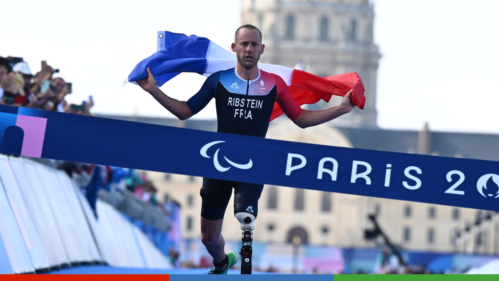
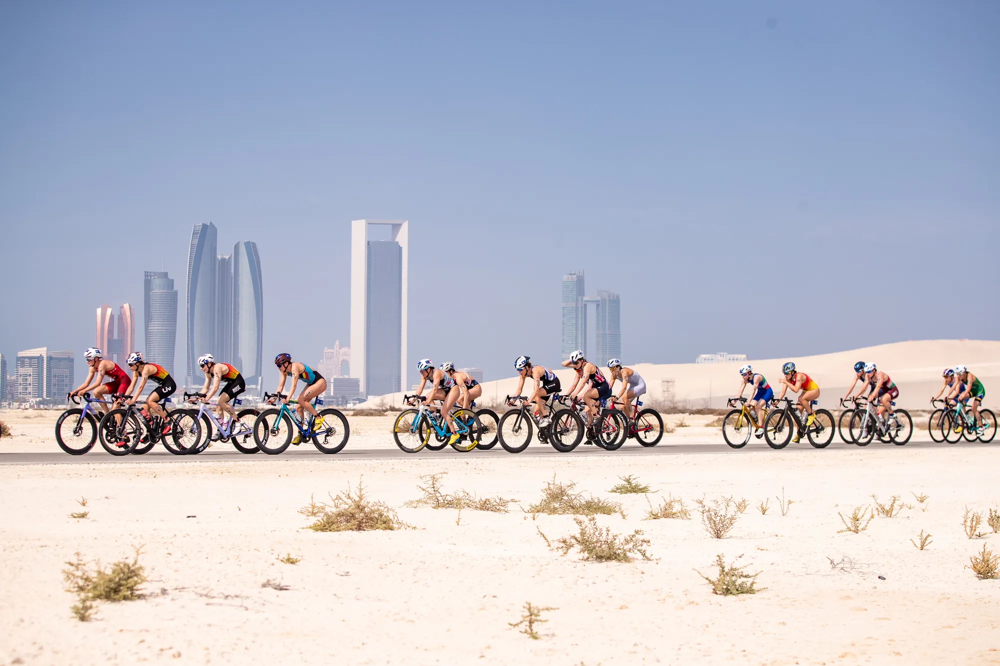

Suivi des performances
Application Django pour centraliser, analyser et visualiser les résultats internationaux de triathlon, adossée à un entrepôt de données alimenté par un pipeline automatisé.
Django
Framework
SQL Server
Entrepôt
Médaillon
Architecture
En cours
Statut
Démonstration
Vidéos du projet
Parcours des principales fonctionnalités de l'application.
5 vidéos
Problème
Les résultats internationaux de triathlon sont dispersés dans l'API World Triathlon et difficiles à exploiter par les équipes.
Solution
Un pipeline Extract-Transform-Load alimente un entrepôt en architecture médaillon (SQL Server), exposé par une application Django sécurisée.
Impact
Des performances centralisées, fiabilisées et consultables via une application interne à gestion des rôles.
À propos du projet
La Fédération Française de Triathlon suit les performances de ses athlètes sur le circuit international. Ce projet centralise les résultats issus de l'API World Triathlon, les fiabilise et les met à disposition des équipes via une application interne sécurisée.
Cadre & collaboration
Cette alternance se déroule dans le cadre et l'infrastructure de France.Sport, la Maison Numérique du Sport de Haut Niveau portée par le ministère des Sports, l'Agence nationale du Sport et l'INSEP. Le travail mené pour la Fédération Française de Triathlon s'inscrit dans cet écosystème national de la donnée sportive de haut niveau, mutualisé entre les fédérations via le Sport Data Hub.
Données
Résultats de compétitions issus de l'API World Triathlon (athlètes, épreuves, classements, temps), à des formats hétérogènes qu'il faut normaliser avant toute exploitation.
Démarche technique
Un pipeline Extract-Transform-Load récupère les données de l'API, puis les charge dans un entrepôt structuré en architecture médaillon (source, nettoyage, couche métier, datamart) sur SQL Server. Une application Django (MVT, ORM) s'appuie sur cet entrepôt, avec authentification et gestion fine des rôles, et des environnements de développement et de production séparés.
Réalisations
- Pipeline Extract-Transform-Load automatisé depuis l'API World Triathlon.
- Entrepôt de données en architecture médaillon (SQL Server).
- Application Django (front et back) avec authentification et gestion des rôles.
- Environnements dev et prod séparés, versionnés sous Git / GitLab.
Compétences démontrées